Exploitation minière et pétrolière (XXᵉ siècle)
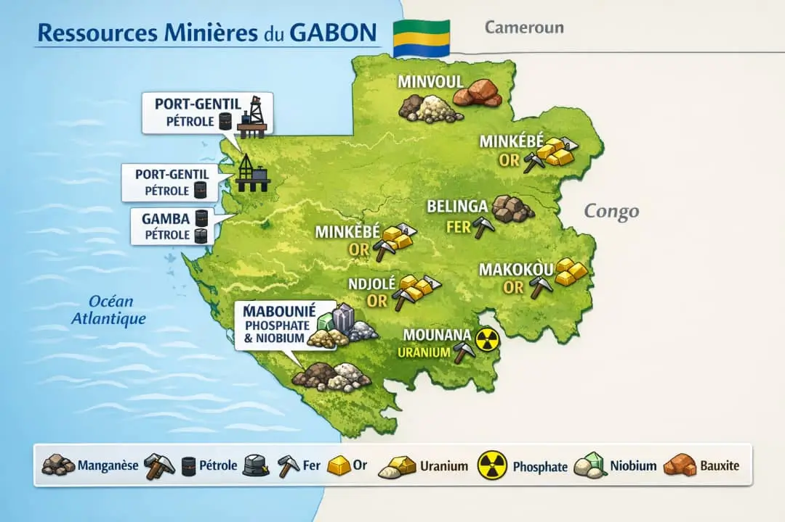


Très abondant (parmi les plus grandes réserves mondiales).
Principal site : Moanda.
L’exploitation à grande échelle du manganèse débute à partir des années 1950.

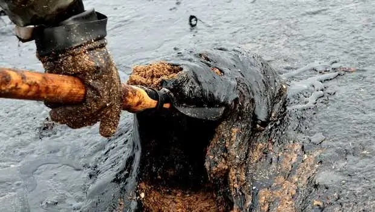
L’exploitation du pétrole débute dans les années 1960 (juste avant et après l’indépendance ).
Le pétrole devient la principale richesse du pays.
Exploité surtout au large (offshore) et dans certaines zones terrestres.
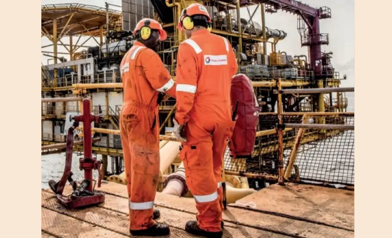

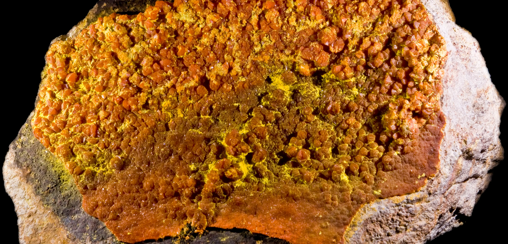
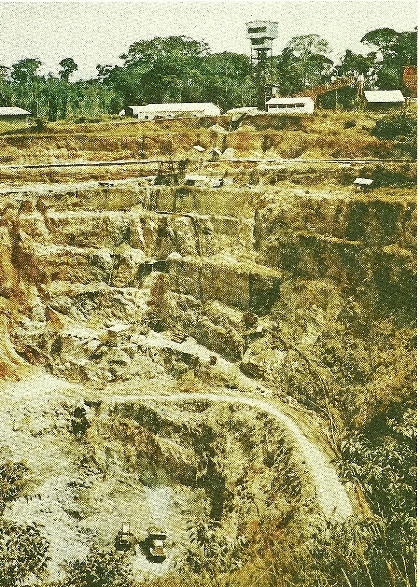
Exploité dans la région de Mounana (années 1960–1990).
Activité arrêtée aujourd’hui.
Important gisement (ex : région de Belinga).
Encore peu exploité à grande échelle.
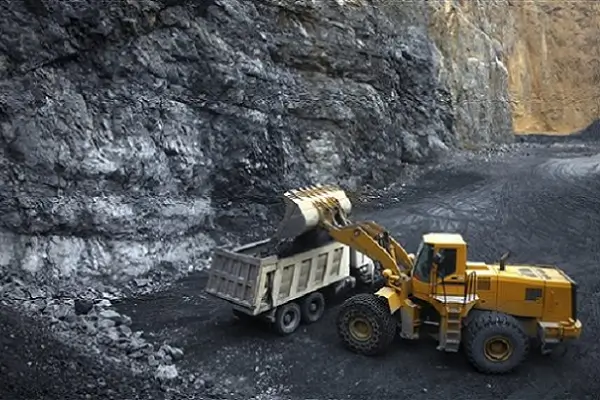
Présent dans plusieurs régions.
Exploitation artisanale et industrielle.
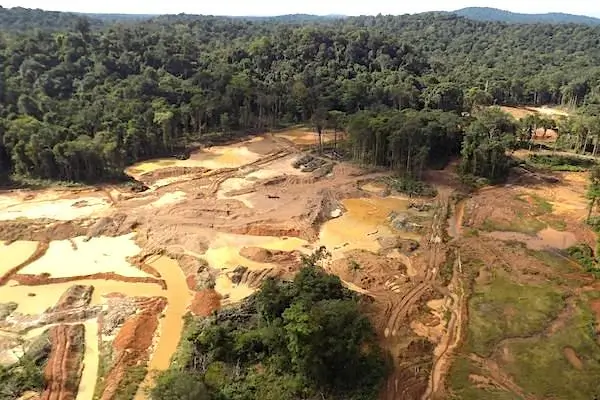

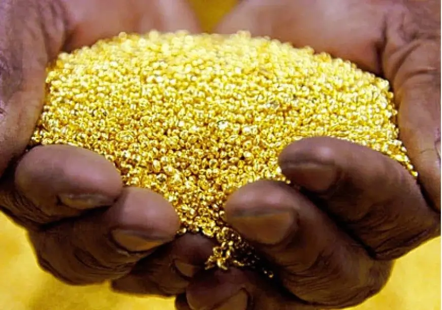

Souvent associé au pétrole.
Encore sous-exploité mais en développement.
.webp)
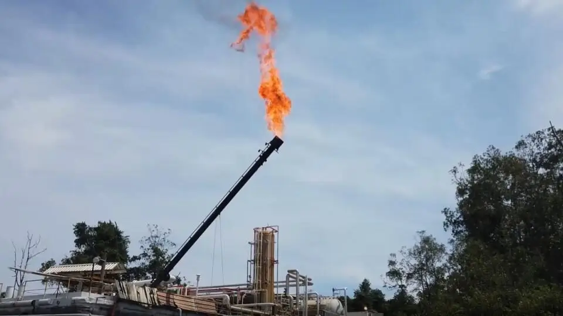
Présents en quantités plus modestes.

.webp)
Gisements identifiés mais peu exploités.
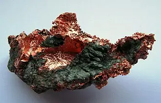
Le cuivre au Gabon se trouve principalement dans la province de la Nyanga, surtout vers Milingui mais, il reste rarement exploité seul et apparaît souvent avec d’autres minerais.
Présence signalée (surtout exploitation artisanale).
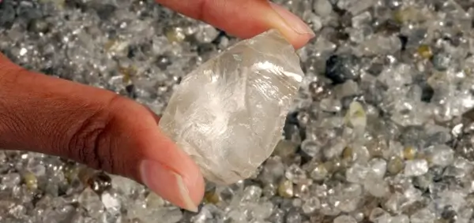
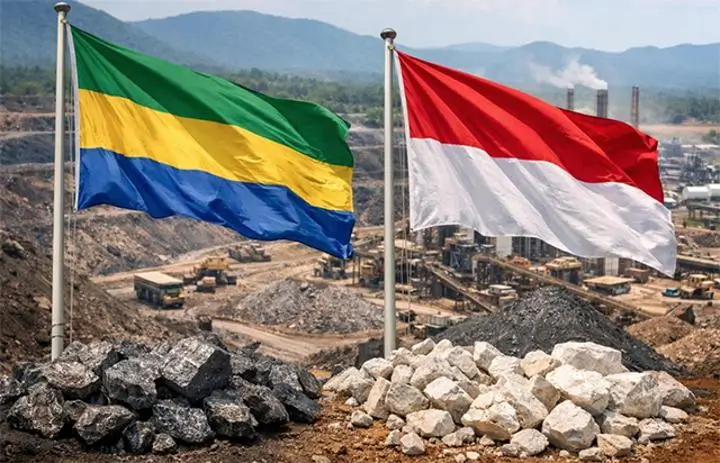
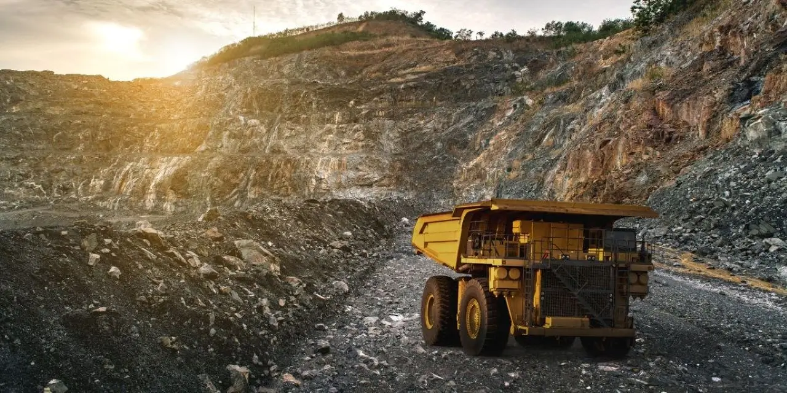
Le Gabon possède la deuxième réserve mondiale de niobium
Utiles pour les technologies modernes.
Encore peu exploités.
Utilisés pour:
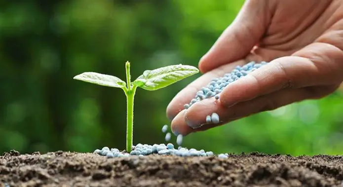
Le phosphate est une richesse clé pour :
Utilisée dans l’industrie pétrolière.

Argile utilisée en céramique et industrie.
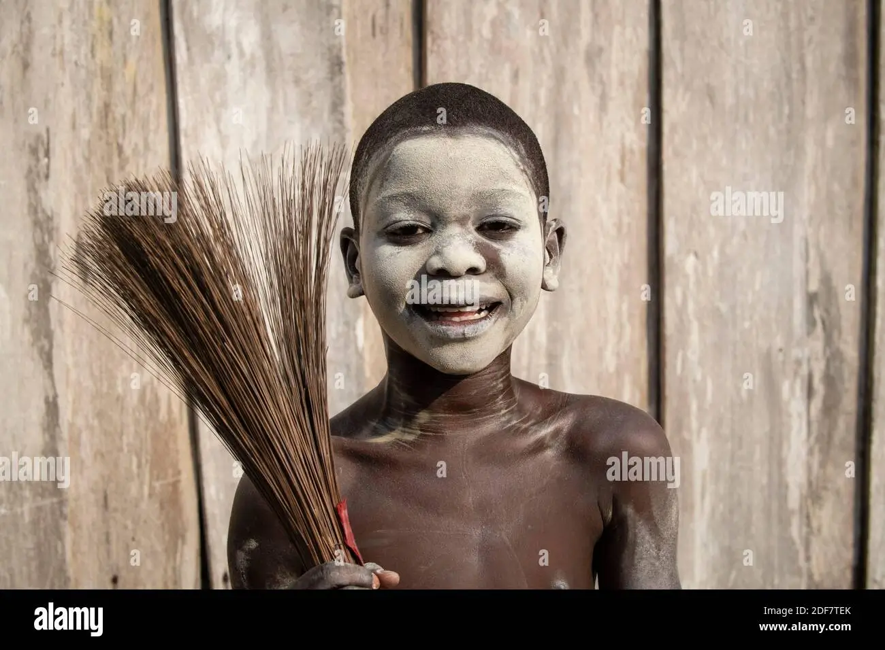
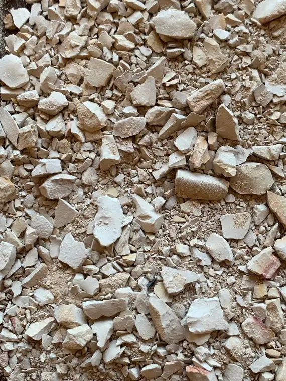
Pour le verre et l’électronique.


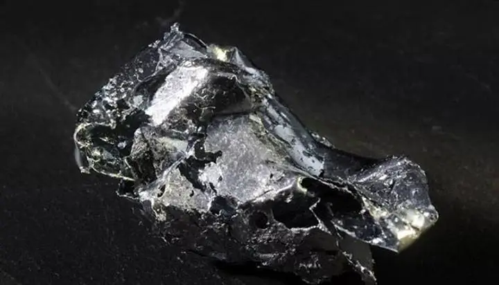
🔋Potentiel en lithium et autres métaux rares.
Encore en exploration.
Toutes ces richesses ne sont pas exploitées actuellement. Certaines sont encore à l’état de gisement ou en exploration.
plus d’images